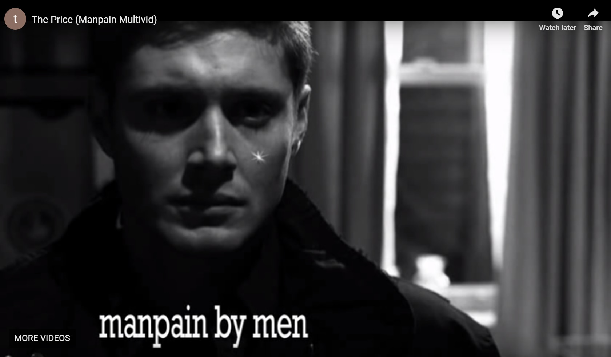
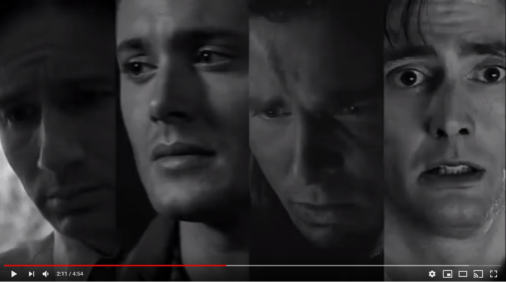
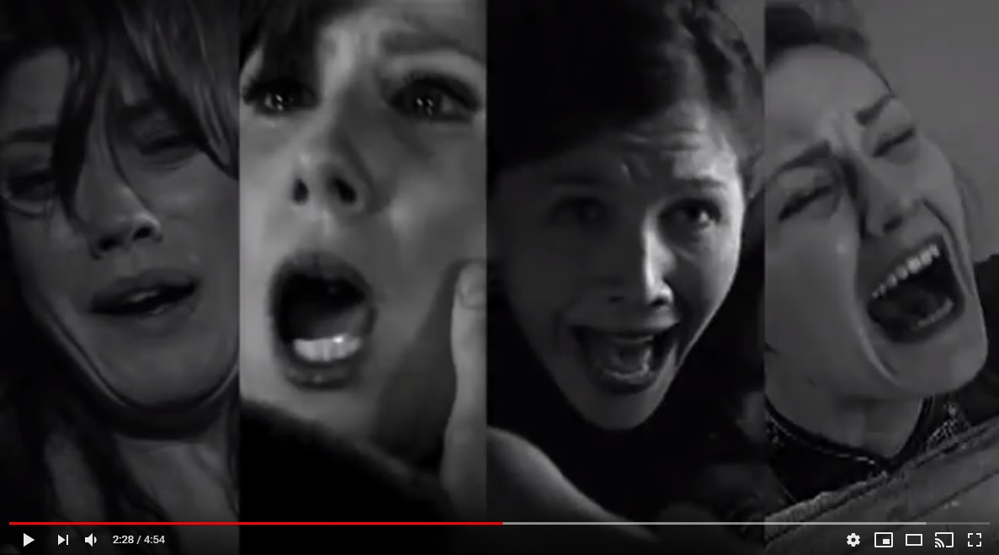
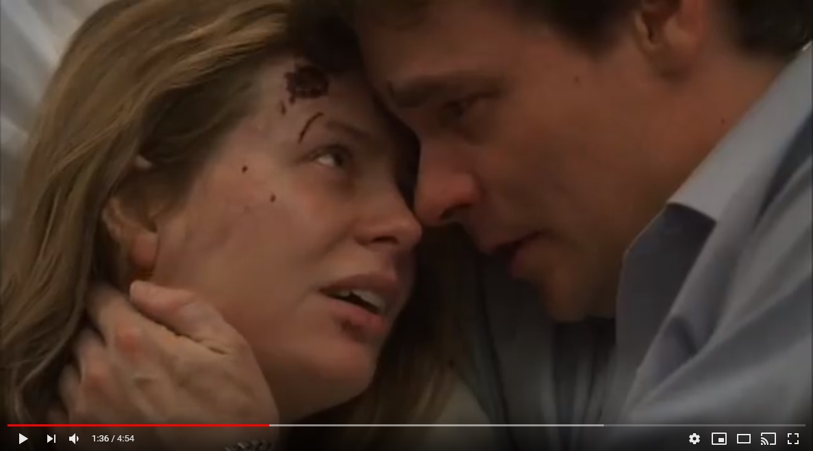
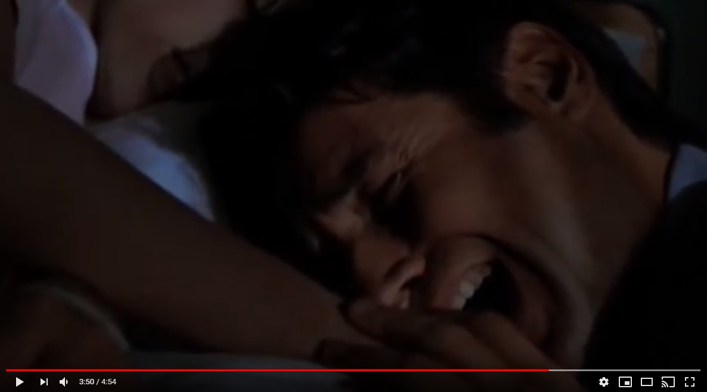
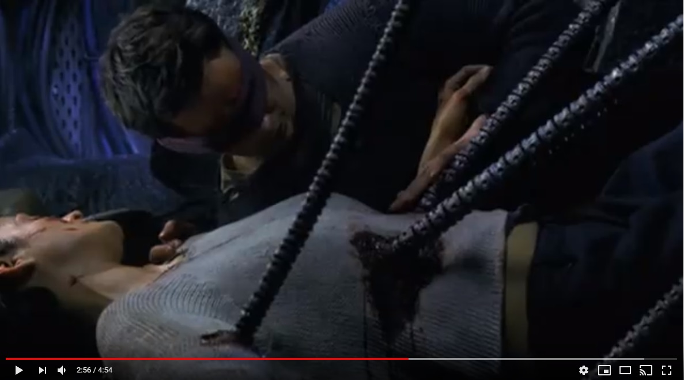
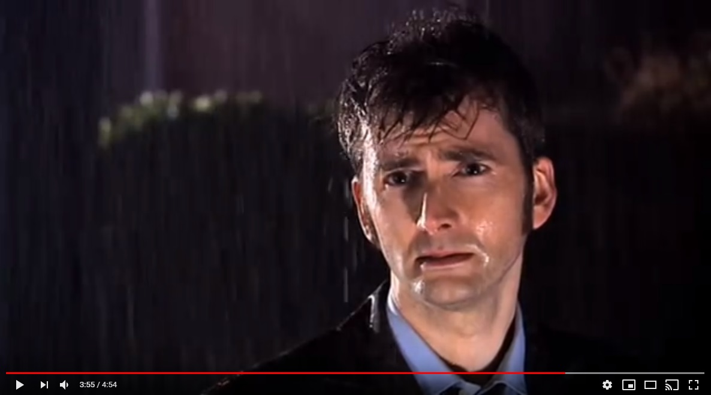

The Power of Current Pop Culture Analysis
Although not employing a "critical engagement" approach with each movie clip as Kevin Durand argued, video essays such as The Price and Stalking for love did not fail to prove their effectiveness in bring up issues underlying our society. These two evidence would consists of the case studies of video as analitical and tools for expression.
We will first look at how evidence is brought up within those videos and then examine the techniques that are used to present those evidence.
Stalking for Love
In the video Stalking for Love, for example, the maker uses eight cut scenes of the same character in the movie Groundhog day being slapped by a woman.
Repetition, as one of the most well-used rhetorical strategies in video essays, are well utilized in the above piece. The elements that are repeated include the two man and woman, the action of slapping in the face, and the close shot of the man’s perplexed face afterwards.
In addition to repetition, this video completes this rhetorical move within 10 seconds. This means that the audience is exposed to a lot of the actions and emotional effects that could achieve a strong impression. In this case, the hero in the movie is portrayed to hitting his a wall when perusing a woman. The short succession of being slapped in the face – a visually compelling evidence – causes emotional upheaval in the audience.
However, it is those emotional appeals that are usually absent in formal analysis essays and research papers that distance pop culture with other academic subjects. From the stand point of academia writers, these videos are rather achieving a sensational effect than providing the creator’s own thoughts and ideas or provoking the thinking of the readers. This leads to the competing forces between entertaining the audience and using materials that require more time and effort on the reader to digest.
The Price
Much similar to Stalking for Love, The Price also uses scenes with a common theme. While repetition is taking place, this video uses video editing techniques to dramatize the effect of men in tears.
This section of the video well exposes the point:
Through making the tears “shiny” such as the end scene picture, the audience’s attention is attracted to the tears that are dropping from men’s eyes. This gives the tears a satirical tone without explicitly stating the author’s intent. The viewers would find it “funny” to watch the shiny tears because of the over-emphasis made on tears. This well achieve the goal of provoking the viewer to wonder why that men are so often portrayed in movies and TV shows to be in tears.

Another argument against taking pop culture analysis academically thus follows: after the bombardment of images, actions, and visual effects as prominently presented in the above videos, the audience is less likely to ponder on the reasoning behind those phenomena but instead they would be affected by their emotions. This is irrefutable since emotional appeal is an inseparable part of catching an audience that would usually not spend much time thinking about the hidden themes and social phenomenon. Yet video essays uses multiple viewpoints – often the opposing view – to add more logical appeals into their arguments.
Both The Price and Stalking for Love use contrast to advance their argument by exploring evidence when the situation is reversed between subjects. That is, women in pain as opposed to men in pain – The Price – and women stalking men as contrasting to men stalking women – Stalking for Love.
Stalking for Love
To give examples of woman being depicted as stalkers, the author of Stalking for Love first explains that there are relatively fewer instances of women as stalkers than men as stalkers with his own narrative.
The use of a direct narrative voice in the video serves to provide background information for the argument. By talking directly to the audience, the video engages with its audience in a natural and friendly tone. The narrative points out that as comparing to men, women are depicted as creepy and rude when stalking. With cut scenes from two movies that demonstrated this, a visually compelling evidence is presented that contrast with how men are depicted in stalking behaviors – romantic and a show of courage.
(The two pop culture films in which women are stalking men are not provided here due to that the original video is taken down from YouTube.)The Price
The contrasting theme is more prevalent in The Price than in Stalking for Love. Let's look at those screenshots of the elements in this video.
 These first two screenshots show that the author uses a parallel structure to emphasize the difference between men in pain and women in pain. This contrast is further strengthened by repetition. Four similar faces are consorted in to a grid to expose the commonalities among depictions of men and women. Thus, the difference is immediately apparent to the audience: the one who actually experiences pain are not men, but women.
Notice the time lapse between the two shots – less than twenty seconds passed between those two scenes. The time dimension is another factor that can reinforce the rhetorical move of the author. Through this quick transition, the nature of the two type of evidence is being drawn together and compared.
 Further evidence is used to advance the contrasting phenomenon between men and women in pain. This type of evidence put man and woman in a single shot when they are both experiencing a traumatic event. The contrasting theme is still made prevalent with the difference between the man and woman in the shot. As the woman is drenched in blood, the man, in comparison, is alive and well, only except for an expression of loss, pain and sadness.
 The writer's memo of The Price contains the rational of the rhetorical choices made by the author. Writer's Memo